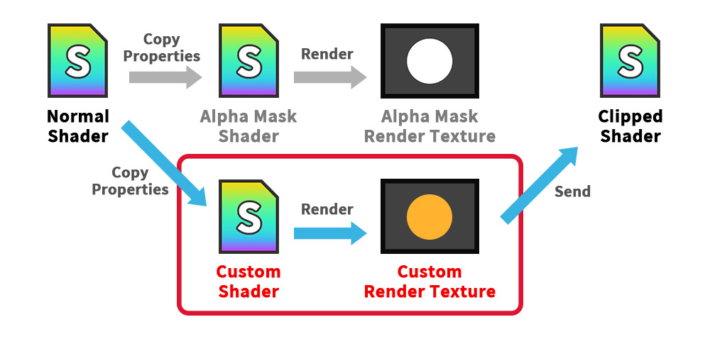
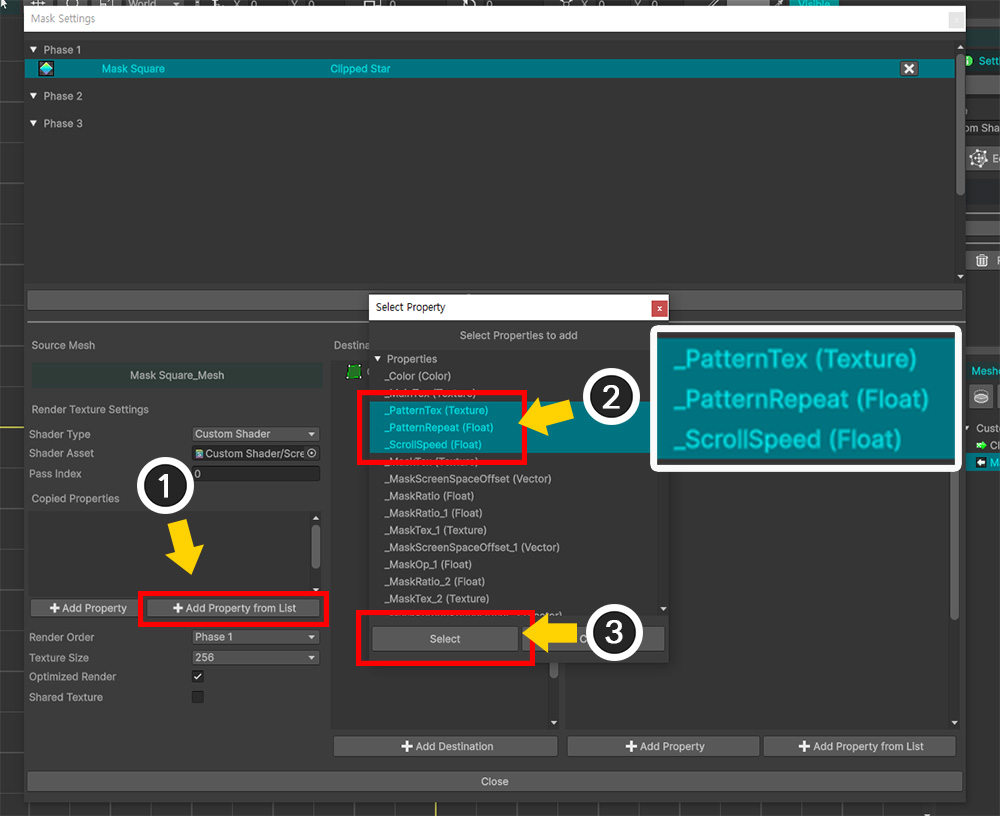
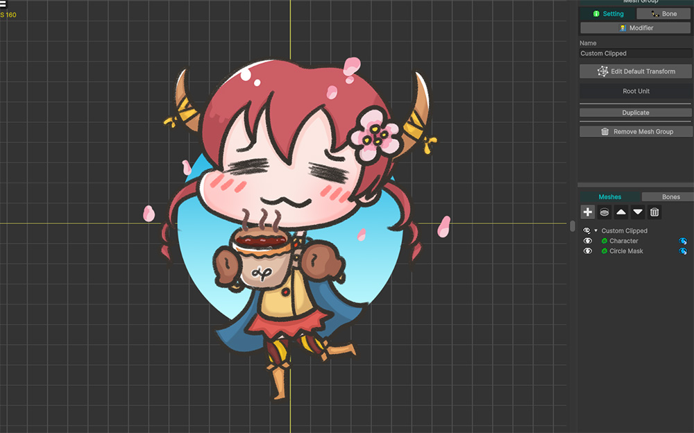
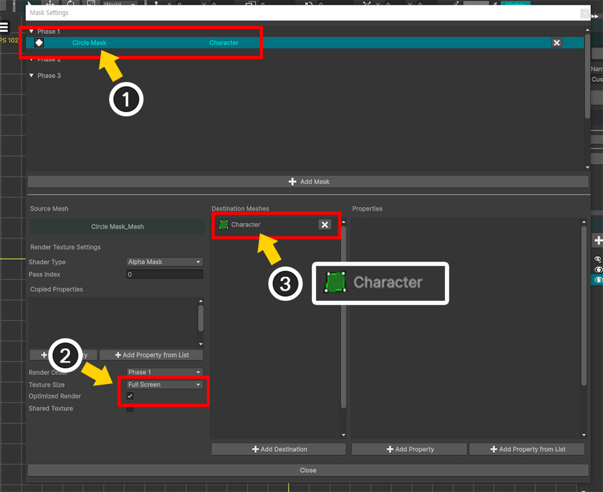
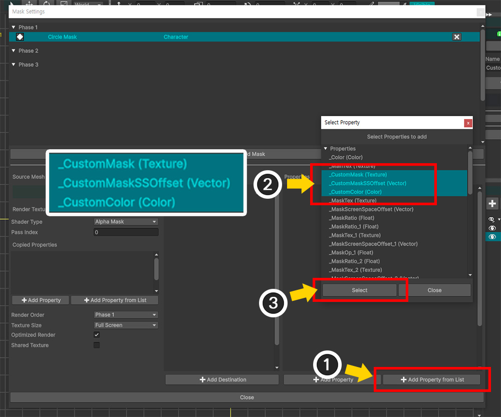
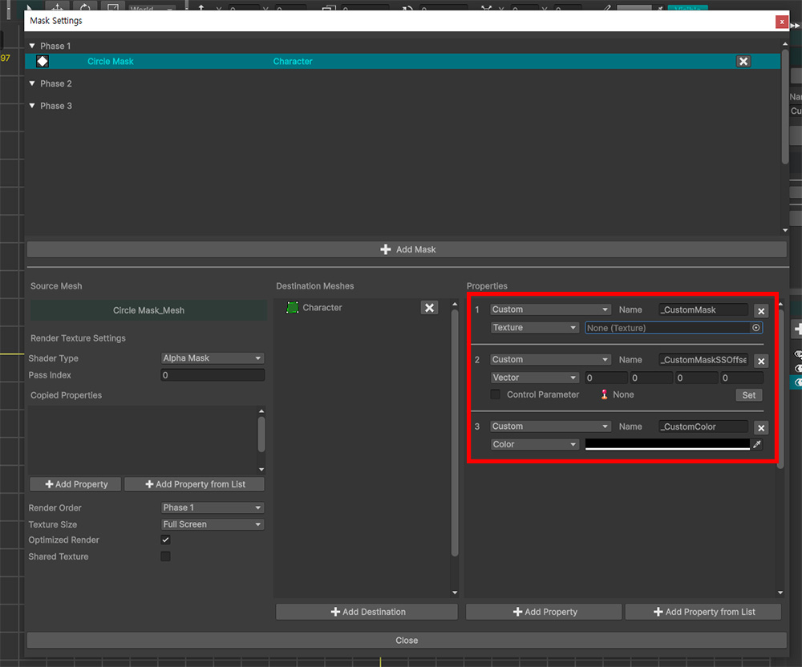
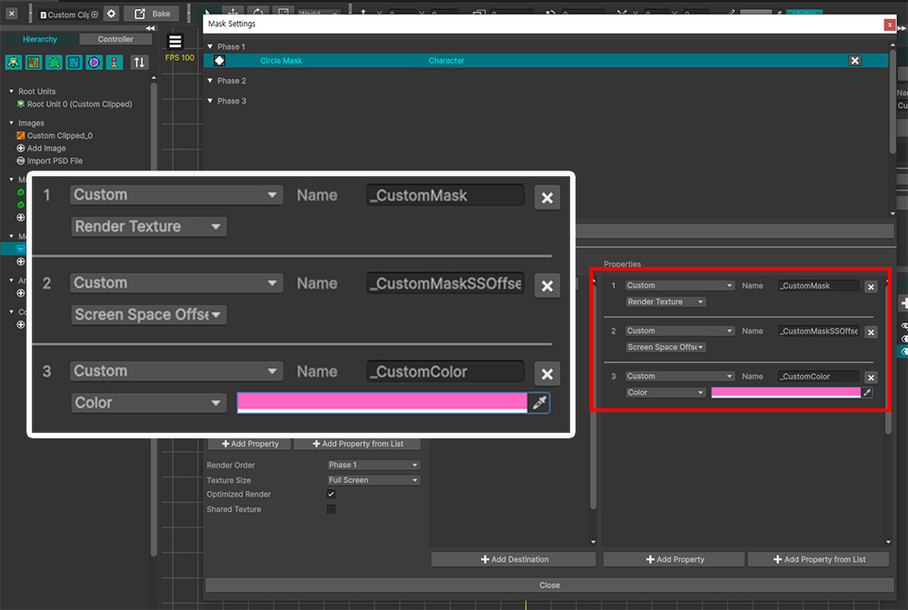

AnyPortrait > 메뉴얼 > 마스크와 커스텀 쉐이더
마스크와 커스텀 쉐이더
1.6.0
마스크 기능을 활용하면 기본적인 알파 마스크에 의한 클리핑 외에도 다양한 효과를 만드는 것이 가능합니다.
마스크 처리 과정에서 사용되는 쉐이더를 교체하거나 직접 작성하는 방법에 대해서 알아봅시다.
마스크를 생성하는 쉐이더를 변경하기

마스크를 생성하는 과정에서는 기본적으로 알파 마스크 쉐이더(Alpha Mask Shader)가 사용됩니다.
만약, 쉐이더를 변경하면 렌더 텍스쳐가 다르게 생성됩니다.
쉐이더에 따라서 렌더 텍스쳐가 어떻게 바뀌는지 확인해봅시다.

(1) 마스크 렌더 텍스쳐를 테스트해보기 위해서 메시를 준비했습니다.
(2) 모디파이어에 따른 렌더 텍스쳐의 변화를 확인해보기 위해서 Color Only (Controller) 모디파이어를 추가했습니다.
(3) 컨트롤 파라미터에 따라 메시의 색상이 바뀝니다.

(1) 마스크 설정 다이얼로그를 열고 준비된 메시에 대한 마스크 데이터를 생성합니다.
(2) Shader Type 옵션의 값을 하나씩 선택하여 테스트해볼 것입니다. 일단 기본값인 "Alpha Mask"를 선택해봅시다.
Bake를 하고 유니티 씬에서 테스트를 해봅시다.

이 예제에서는 클리핑 결과를 보기보다 생성된 렌더 텍스쳐를 프레임 디버거를 통해서 확인해봅시다.
(1) 유니티 메뉴에서 Window > Analysis > Frame Debugger를 실행합니다.
(유니티 버전에 따라 메뉴 경로가 다를 수 있습니다.)

(1) 게임을 실행합니다.
(2) 컨트롤 파라미터를 조절하여 메시의 색상을 변경합니다.
(3) Frame Debugger에서 Enable 버튼을 누릅니다.

게임이 일시정지되며 렌더링의 각 단계를 확인해볼 수 있습니다.
(1) 마스크는 커맨드 버퍼를 통해서 생성되므로, 렌더링 과정 중의 커맨드 버퍼가 동작하는 항목을 찾아서 선택합니다.
커맨드 버퍼의 이름이 AP + Root Unit 이름 + 메시 이름 + 마스크 처리 방식으로 명명되었으므로, 이것을 찾으면 될 것입니다.
(2) 커맨드 버퍼의 결과를 확인하면 렌더 텍스쳐를 대상으로 마스크가 렌더링된 것을 볼 수 있습니다.
앞서, 마스크의 Shader Type을 Alpha Mask로 선택했기 때문에 렌더 텍스쳐가 흑백의 이미지로 렌더링됩니다.
그렇다면, Shader Type을 변경하면 렌더 텍스쳐가 어떻게 변할지 확인해봅시다.

(1) 다시 마스크 설정 다이얼로그를 열고 마스크 데이터를 선택한 뒤, Shader Type을 "Main Texture With Color"와 "Main Texture Only"로 한번씩 선택하고 결과를 확인해봅시다.

게임을 실행하고 프레임 디버거를 실행하여 커맨드 버퍼의 결과를 확인하면 위와 같이 마스크가 다르게 렌더링되는 것을 볼 수 있습니다.
정리하자면, 각각의 Shader Type은 다음과 같이 동작하는 것을 알 수 있습니다.
- Alpha Mask : 모디파이어의 색상 연산을 포함한 결과의 Alpha 채널의 값이 그레이스케일(Grayscale)로 렌더링됩니다.
- Main Texture With Color : 렌더 텍스쳐에 모디파이어의 색상 연산이 적용됩니다. 화면에 렌더링되는 것과 동일합니다.
- Main Texture Only : 모디파이어의 연산은 무시되며 오직 원본 이미지의 색상만 렌더 텍스쳐에 반영됩니다.
유니티 2023 및 이후 버전에서의 URP에서는 "Main Texture With Color", "Main Texture Only" 방식의 쉐이더로 마스크를 생성할 수 없습니다.
특정 버전의 URP부터는 커맨드 버퍼에 의한 렌더링될 수 있는 쉐이더의 타입을 제한했기 때문으로 추측됩니다.
이 이슈에 대한 내용과 해결 방법은 이 메뉴얼의 하단에서 상세히 소개합니다.
커스텀 마스크 쉐이더
마스크를 생성하는 쉐이더를 변경하면 렌더 텍스쳐가 다르게 렌더링된다는 것을 앞의 예제에서 확인했습니다.
이번에는 커스텀 쉐이더를 직접 작성하는 상황과 그 방법을 알아봅시다.

마스크로서의 렌더 텍스쳐를 렌더링하는 기본적인 과정은 위와 같습니다.
마스크 메시가 일반 쉐이더(Normal Shader)로 렌더링을 함과 동시에 알파 마스크 쉐이더(Alpha Mask Shader)로 렌더 텍스쳐를 렌더링합니다.
알파 마스크 쉐이더가 동작하기 위해서는 "_Color"와 "_MainTex" 프로퍼티에 값을 입력해야 합니다.
이 값들은 모디파이어와 애니메이션 등의 영향을 받기 때문에 실시간으로 바뀔 수 있으므로, 매 업데이트마다 일반 쉐이더에 적용되는 값을 그대로 복사하여 적용합니다.

만약 재질 라이브러리(관련 페이지)를 이용해서 메시를 커스텀 쉐이더로 렌더링한다고 가정해봅시다.
이 커스텀 쉐이더의 결과가 마스크에 영향을 준다면, 알파 마스크 쉐이더도 이에 맞게 다시 작성되어야 할 것입니다.
특히, 커스텀 쉐이더가 추가적인 프로퍼티에 의해서 렌더링이 된다면, 알파 마스크 쉐이더도 해당 프로퍼티들을 받아야 합니다.
따라서, 마스크 생성 쉐이더가 정상적으로 동작하기 위해서는 원본 쉐이더로부터 프로퍼티의 값을 복사받아야 합니다.
다음의 예제에서는 커스텀 쉐이더를 메시에 적용하고, 이에 맞게 커스텀 마스크 쉐이더를 추가로 작성하는 과정을 다룹니다.
안내
커스텀 마스크 쉐이더를 위해서 일반 쉐이더가 항상 커스텀 쉐이더로 작성될 필요는 없습니다.
다음의 예제는 기본 프로퍼티("_Color", "_MainTex") 외의 추가적인 프로퍼티가 복사되어야 상황을 보여드리기 위해서 두개의 커스텀 쉐이더가 필요했습니다.
일반 쉐이더와 마스크 쉐이더에 커스텀 쉐이더를 적용하는 것은 상황에 따라 다르며 자유롭게 활용하면 되겠습니다.

1개의 마스크용 메시("Mask Square")와 1개의 클리핑되는 메시("Clipped Star")를 준비했습니다.

(1) 마스크 설정 다이얼로그를 열어서 마스크 메시인 "Mask Square"에 대한 마스크 데이터를 추가합니다.
(2) Shader Type은 일단 기본값인 "Alpha Mask"로 설정합니다.
(3) 대상 메시로서 "Clipped Star"를 추가합니다.
(4) 전달되는 프로퍼티로서 "Alpha Mask Preset"을 추가합니다.
이 과정까지 완료되면, 일반적인 알파 마스크 클리핑이 수행될 것입니다.
이제 "Mask Square"가 커스텀 쉐이더에 의해서 렌더링되도록 만들어봅시다.
다음의 쉐이더 코드는 기본적인 "Unlit" 쉐이더를 바탕으로 작성되었으며, "화면 좌표계를 통해 매핑되는 패턴 텍스쳐가 Alpha 값에 영향을 주는 내용"을 담고 있습니다.
참고
커스텀 쉐이더 작성 방법에 대해서는 관련 페이지를 참고해주세요.
Shader "Custom Shader/Screen Space Pattern (Alpha Blend)"
{
Properties
{
_Color ("2X Color (RGBA Mul)", Color) = (0.5, 0.5, 0.5, 1.0)
_MainTex ("Main Texture (RGBA)", 2D) = "white" {}
// 화면 효과를 위한 패턴 텍스쳐 및 스크롤 속도
_PatternTex ("Pattern Texture (Grayscale)", 2D) = "white" {}
_PatternRepeat ("Pattern Repeat", float) = 1.0
_ScrollSpeed ("Scroll Speed", float) = 0.2
}
SubShader
{
Tags { "RenderType" = "Transparent" "Queue" = "Transparent" "PreviewType" = "Plane" }
Blend SrcAlpha OneMinusSrcAlpha
LOD 200
Pass
{
Tags { "LightMode" = "ForwardBase" }
ZWrite Off
CGPROGRAM
#pragma vertex vert
#pragma fragment frag
#include "UnityCG.cginc"
struct appdata
{
float4 vertex : POSITION;
float2 uv : TEXCOORD0;
};
struct v2f
{
float2 uv : TEXCOORD0;
float4 vertex : SV_POSITION;
// 화면 효과를 위한 화면 좌표계
float4 screenUV : TEXCOORD1;
};
sampler2D _MainTex;
float4 _MainTex_ST;
half4 _Color;
// 패턴 텍스쳐와 스크롤 속도 변수
sampler2D _PatternTex;
float _PatternRepeat;
float _ScrollSpeed;
v2f vert (appdata v)
{
v2f o;
o.vertex = UnityObjectToClipPos(v.vertex);
o.uv = TRANSFORM_TEX(v.uv, _MainTex);
// 화면 좌표계 계산
o.screenUV = ComputeScreenPos(o.vertex);
return o;
}
fixed4 frag (v2f i) : SV_Target
{
fixed4 col = tex2D(_MainTex, i.uv);
#if UNITY_COLORSPACE_GAMMA
col.rgb *= _Color.rgb * 2.0f;
#else
col.rgb *= _Color.rgb * 4.595f;
col.rgb = pow(col.rgb, 2.2f);
#endif
col.a *= _Color.a;
// 시간에 따라 옆으로 움직이는 패턴 텍스쳐
float2 screenUV = i.screenUV.xy / i.screenUV.w;
screenUV.x *= _PatternRepeat;
screenUV.y *= _PatternRepeat;
screenUV.x += _Time.y * _ScrollSpeed;
fixed pattern = tex2D(_PatternTex, screenUV).r;
col.a *= pattern;
return col;
}
ENDCG
}
}
}

작성한 커스텀 쉐이더를 적용해봅시다.
(1) 루트 유닛을 선택합니다.
(2) Material Library 버튼을 누릅니다.
(3) Unlit 재질 세트를 선택합니다.
(4) Duplicate 버튼을 누릅니다.

(1) 복제된 재질 세트를 선택합니다.
(2) 재질 세트의 이름을 적절히 변경합니다.
(3) Default Material 버튼을 눌러서 ON 상태로 변경합니다.
(4) Alpha Blend 쉐이더를 앞서 작성한 커스텀 쉐이더로 변경합니다.

커스텀 쉐이더의 프로퍼티들을 재질 세트에 추가해야합니다.
(1) 아래로 스크롤을 하여 Add Property from List 버튼을 누릅니다.
(2) 커스텀 쉐이더에서 작성된 "_PatternTex", "_PatternRepeat", "_ScrollSpeed" 프로퍼티들을 Ctrl 키를 눌러서 모두 선택합니다.
(3) Select 버튼을 누릅니다.

(1) 패턴 텍스쳐 및 패턴 반복 값, 스크롤 속도를 입력합니다.

(1) AnyPortrait 에디터에서는 커스텀 쉐이더가 동작하지 않습니다.
(2) Bake를 실행하여 유니티 씬에서 확인해봅시다.

커스텀 쉐이더에 의해서 패턴 텍스쳐가 메시에 적용된 것을 볼 수 있습니다.
그런데 이 패턴 텍스쳐에 의해 물결 무늬로 투명해진 부분이 클리핑에는 반영되지 않는 것을 볼 수 있습니다.
커스텀 쉐이더의 패턴 관련 코드가 알파 마스크 쉐이더에는 존재하지 않기 때문입니다.
커스텀 쉐이더의 내용을 마스크에도 반영하기 위해서는 알파 마스크 쉐이더도 커스텀 쉐이더로 다시 작성해야합니다.
커스텀 마스크 쉐이더를 다음과 같이 작성해봅시다.
Shader "Custom Shader/Screen Space Pattern (Alpha Mask)"
{
Properties
{
_Color ("Color (Alpha)", Color) = (0.5, 0.5, 0.5, 1.0)
_MainTex ("Main Texture (RGBA)", 2D) = "white" {}
_PatternTex ("Pattern Texture (Grayscale)", 2D) = "white" {}
_PatternRepeat ("Pattern Repeat", float) = 1.0
_ScrollSpeed ("Scroll Speed", float) = 0.2
}
SubShader
{
Tags { "RenderType"="Transparent" "Queue" = "Transparent" "PreviewType" = "Plane" }
Blend SrcAlpha OneMinusSrcAlpha
ZWrite Off
Cull Off
LOD 200
Pass
{
CGPROGRAM
#pragma vertex vert
#pragma fragment frag
#include "UnityCG.cginc"
struct appdata
{
float4 vertex : POSITION;
float2 uv : TEXCOORD0;
};
struct v2f
{
float2 uv : TEXCOORD0;
float4 vertex : SV_POSITION;
// 화면 효과를 위한 화면 좌표계
float4 screenUV : TEXCOORD1;
};
sampler2D _MainTex;
float4 _MainTex_ST;
float4 _Color;
// 패턴 텍스쳐와 스크롤 속도 변수
sampler2D _PatternTex;
float _PatternRepeat;
float _ScrollSpeed;
v2f vert (appdata v)
{
v2f o;
o.vertex = UnityObjectToClipPos(v.vertex);
o.uv = TRANSFORM_TEX(v.uv, _MainTex);
// 화면 좌표계 계산
o.screenUV = ComputeScreenPos(o.vertex);
return o;
}
fixed4 frag (v2f i) : SV_Target
{
fixed4 col = tex2D(_MainTex, i.uv);
// 알파 마스크 연산 ( White + Alpha )
col.rgb = fixed3(1.0f, 1.0f, 1.0f);
col.a = saturate(col.a * _Color.a);
// 시간에 따라 옆으로 움직이는 패턴 텍스쳐
float2 screenUV = i.screenUV.xy / i.screenUV.w;
screenUV.x *= _PatternRepeat;
screenUV.y *= _PatternRepeat;
screenUV.x += _Time.y * _ScrollSpeed;
fixed pattern = tex2D(_PatternTex, screenUV).r;
col.a *= pattern;
return col;
}
ENDCG
}
}
}
커스텀 쉐이더로 작성된 위의 알파 마스크 쉐이더를 보면 일반 쉐이더의 내용과 유사해보입니다.
차이점은 RGB 채널의 결과가 흰색 (1, 1, 1)이라는 점입니다.
이제 이 커스텀 마스크 쉐이더를 적용해봅시다.

아주 특수하지 않은 커스텀 쉐이더는 마스크 설정 다이얼로그가 아닌 재질 라이브러리에서 설정하는 것도 가능합니다.
모든 클리핑 메시에 공통으로 적용될 쉐이더라면 위와 같이 재질 라이브러리의 "Alpha Mask" 항목에 쉐이더를 입력하면 됩니다.
이렇게 설정하면 마스크 설정 다이얼로그에서 Shader Type을 "Alpha Mask"로 설정했을 때 해당 쉐이더가 사용됩니다.
다만, 이 페이지에서는 이 방법에 대해서는 다루지 않습니다.

(1) 마스크 설정 다이얼로그를 열고 마스크 데이터를 선택합니다.
(2) Shader Type의 값을 "Custom Shader"로 변경합니다.

(1) Shader Type을 "Custom Shader"로 변경하면 Shader Asset이라는 옵션이 등장합니다.
여기에 앞서 작성한 커스텀 마스크 쉐이더를 입력합니다.

커스텀 프로퍼티인 "_PatternTex", "_PatternRepeat", "_ScrollSpeed"의 값을 원래의 쉐이더에서 복사하여 커스텀 마스크 쉐이더로 입력해야합니다.
(1) Add Property from List 버튼을 누릅니다.
(2) Ctrl 키를 누른 상태로 "_PatternTex", "_PatternRepeat", "_ScrollSpeed"를 모두 선택합니다.
(3) Select 버튼을 누릅니다.
안내
만약 추가하고자 하는 프로퍼티가 목록에 없다면, 해당 쉐이더가 적용된 재질 세트가 Default Material로서 설정되지 않았기 때문일 수 있습니다.
재질 라이브러리에서 확인해보시길 바랍니다.
또는, Add Property 버튼을 눌러서 프로퍼티 이름을 직접 입력하는 것도 가능합니다.

(1) 일반 쉐이더로부터 복사 받을 프로퍼티가 등록된 것을 볼 수 있습니다. 각 항목은 "프로퍼티의 이름"과 "값의 타입", "삭제 버튼"으로 구성됩니다.
(2) 이 커스텀 쉐이더는 "화면 좌표계"를 이용하므로 클리핑 마스크 최적화 기능을 사용하면 안됩니다. (관련 페이지)
Optimized Render의 체크를 해제하고, Texture Size가 적당히 큰 값을 가지도록 변경합니다.

Bake를 하고 유니티 씬에서 확인해보면, 커스텀 쉐이더의 패턴 텍스쳐 효과가 마스크에도 적용된 것을 볼 수 있습니다.
커스텀 클리핑 쉐이더
이전까지의 과정은 "마스크 생성 과정에서 커스텀 쉐이더를 적용"하는 것이었습니다.
이번에는 "생성된 마스크를 받아서 클리핑 렌더링을 하는 과정"에 커스텀 쉐이더를 작성하여 적용해보겠습니다.

마스크 렌더 텍스쳐는 클리핑 되는 대상 메시에 전달되는데, 이를 "클리핑 쉐이더(Clipped Shader)"가 받아서 클리핑 처리를 수행합니다.
여기서, 클리핑 쉐이더를 커스텀 쉐이더로 작성하는 것도 가능합니다.
일반적으로 커스텀 클리핑 쉐이더를 설정하는 작업은 재질 라이브러리에서 수행되어 완료됩니다.
여기서 고려해야하는 것은 커스텀 클리핑 쉐이더가 마스크와 관련된 특수한 프로퍼티 값을 필요로 하는 경우입니다.
재질 라이브러리에서는 마스크 데이터와 무관한 값이 커스텀 프로퍼티에 전달하도록 설정할 수 있습니다.
그렇지만, 마스크 데이터와 관련된 값을 전달하기 위해서는 마스크 설정 다이얼로그에서 설정해야합니다.
이번 예제에서는 "마스크를 받아서 Alpha를 바꾸지는 않고 마스크의 외부에 지정된 색으로 변경"하는 효과를 가진 커스텀 클리핑 쉐이더를 만들어서 적용해보겠습니다.
특히, 클리핑과 관련된 모든 프로퍼티를 사용자가 임의로 만든다는 가정하에 쉐이더를 작성해보겠습니다.

이번 예제에서 사용되는 메시들입니다.
앞쪽에는 예쁜 캐릭터가 그려진 "Character" 메시가 있고, 뒤에는 하늘색의 "Circle Mask" 메시가 있습니다.
뒤의 "Circle Mask"가 마스크를 생성하여 "Character" 메시에 전달하면, "Character" 메시의 마스크와 겹치지 않는 곳의 색이 바뀌도록 만들어보겠습니다.
이러한 효과를 만들기 위해서 커스텀 클리핑 쉐이더를 다음과 같이 작성해보았습니다.
Shader "Custom Shader/Reverse Color"
{
Properties
{
_Color ("2X Color (RGBA Mul)", Color) = (0.5, 0.5, 0.5, 1.0)
_MainTex ("Main Texture (RGBA)", 2D) = "white" {}
// 커스텀 마스크와 색상
_CustomMask ("Custom Mask (A)", 2D) = "white" {}
_CustomMaskSSOffset ("Custom Mask Screen Space Offset (XY_Scale)", Vector) = (0, 0, 0, 1)
_CustomColor ("Custom Color by Mask (RGB)", Color) = (1, 1, 1, 1)
}
SubShader
{
Tags { "RenderType" = "Transparent" "Queue" = "Transparent" "PreviewType" = "Plane" }
Blend SrcAlpha OneMinusSrcAlpha
ZWrite Off
LOD 200
Pass
{
CGPROGRAM
#pragma vertex vert
#pragma fragment frag
#include "UnityCG.cginc"
struct appdata
{
float4 vertex : POSITION;
float2 uv : TEXCOORD0;
};
struct v2f
{
float2 uv : TEXCOORD0;
float4 vertex : SV_POSITION;
// 클리핑 연산을 위한 화면 좌표계
float4 screenPos : TEXCOORD1;
};
sampler2D _MainTex;
float4 _MainTex_ST;
half4 _Color;
// 커스텀 마스크 프로퍼티 변수
sampler2D _CustomMask;
float4 _CustomMaskSSOffset;
float4 _CustomColor;
// 마스크 함수 : 렌더 텍스쳐 UV 계산
float2 GetMaskScreenUV (float2 screenUV, float4 offset)
{
float2 result = screenUV - float2(0.5f, 0.5f);
result.x *= offset.z;
result.y *= offset.w;
result.x += offset.x * offset.z;
result.y += offset.y * offset.w;
result += float2(0.5f, 0.5f);
return result;
}
v2f vert (appdata v)
{
v2f o;
o.vertex = UnityObjectToClipPos(v.vertex);
o.uv = TRANSFORM_TEX(v.uv, _MainTex);
// 클리핑 마스크 UV 계산을 위한 화면 좌표계
o.screenPos = ComputeScreenPos(o.vertex);
return o;
}
fixed4 frag (v2f i) : SV_Target
{
fixed4 col = tex2D(_MainTex, i.uv);
#if UNITY_COLORSPACE_GAMMA
col.rgb *= _Color.rgb * 2.0f;
#else
col.rgb *= _Color.rgb * 4.595f;
col.rgb = pow(col.rgb, 2.2f);
#endif
col.a *= _Color.a;
// 커스텀 클리핑 마스크 계산
float2 screenUV = i.screenPos.xy / max(i.screenPos.w, 0.0001f);
float alphaMask = tex2D(_CustomMask, GetMaskScreenUV(screenUV, _CustomMaskSSOffset)).r;
// 마스크 반전 후, 지정된 색상으로 보간
alphaMask = saturate(1.0f - alphaMask);
col.rgb = lerp(col.rgb, _CustomColor.rgb, alphaMask);
return col;
}
ENDCG
}
}
}
이 커스텀 쉐이더는 "_CustomMask", "_CustomMaskSSOffset", "_CustomColor" 프로퍼티로 마스크 데이터를 받아서 렌더링을 합니다.
알파 마스크의 값을 받아서 "alphaMask" 변수에 저장한 후, 이것을 Alpha 채널에 곱하지 않고 색상 연산의 보간값으로 사용했습니다.

작성된 커스텀 클리핑 쉐이더를 적용해봅시다.
(1) 재질 라이브러리를 열고 클리핑 쉐이더를 적용하기 위한 재질 세트를 새로 만들거나 복제합니다.
(2) 재질 세트를 선택하고 이름을 설정합니다.
(3) Default Material 버튼을 눌러서 ON 상태로 만듭니다.
(4) Clipping Rendering의 Alpha Blend 항목의 쉐이더에 앞서 만든 커스텀 쉐이더를 입력합니다.

이제 마스크 데이터를 만들어봅시다.
(1) 마스크 설정 다이얼로그를 열고 Add Mask 버튼을 누릅니다.
(2) 마스크 메시가 될 "Circle Mask" 메시를 선택합니다.
(3) Select 버튼을 누릅니다.

(1) 생성된 마스크 데이터를 선택합니다.
(2) Texture Size를 적절하게 설정합니다.
(3) 클리핑이 될 "Character" 메시를 등록합니다.

이제 대상 메시로 마스크 데이터를 전달하기 위해 프로퍼티를 추가해야합니다.
이전의 예제에서는 "Alpha Mask Preset" 방식의 프로퍼티를 이용했지만, 여기서는 커스텀 쉐이더의 프로퍼티에 맞게 설정을 해야합니다.
(1) Add Property from List 버튼을 누릅니다.
(2) 커스텀 쉐이더의 프로퍼티인 "_CustomMask", "_CustomMaskSSOffset", "_CustomColor"를 Ctrl 키를 눌러서 모두 선택합니다.
(3) Select 버튼을 누릅니다.

선택했던 프로퍼티들이 마스크 데이터에 등록되었습니다.
이제 등록된 프로퍼티들을 통해서 마스크 데이터가 클리핑 메시로 전달이 될 것입니다.
현재는 각 프로퍼티의 이름과 타입만 설정된 상태이며, 어떤 값이 전달될 지는 설정되지 않은 상태입니다.
프로퍼티의 값을 설정하기 전에 이 UI가 어떻게 구성되어 있는지 확인해봅시다.

1. 프리셋 타입 : 프로퍼티 정보를 프리셋 형태로 구성할 수 있습니다. 여기서는 개별 프로퍼티에 대해 설정할 것이므로 "Custom" 방식으로 설정됩니다.
2. 프로퍼티 이름 : 쉐이더 내에 정의된 프로퍼티의 이름입니다.
3. 삭제 버튼 : 프로퍼티 정보를 삭제합니다.
4. 프로퍼티의 타입과 값 : 프로퍼티의 값의 타입을 설정하고 전달되는 값을 지정합니다. 타입에 따라서는 자동으로 생성된 값이 전달됩니다.
5. 연동된 컨트롤 파라미터 : 일부 프로퍼티 타입은 컨트롤 파라미터를 연결하여 값을 실시간으로 제어할 수 있습니다.

프로퍼티의 타입과 값을 적절히 설정합니다.
이 예제에서는 각 프로퍼티별로 다음과 같이 설정했습니다.
1. _CustomMask
: Render Texture 타입으로 설정했습니다.
Render Texture 타입은 마스크 렌더 텍스쳐를 클리핑 메시에 전달합니다.
2. _CustomMaskSSOffset
: Screen Space Offset 타입으로 설정했습니다.
Screen Space Offset 타입은 마스크 렌더 텍스쳐의 UV를 계산하기 위해 생성된 Vector 타입의 값을 클리핑 메시에 전달합니다.
Screen Space Offset 값을 활용하는 코드는 위의 커스텀 클리핑 쉐이더의 "GetMaskScreenUV" 함수를 참고해주세요.
3. _CustomColor
: Color 타입으로 설정하고, 색상 값은 분홍색을 설정했습니다.

Bake를 하고 유니티 씬에서 확인하면 위와 같은 결과를 볼 수 있습니다.
커스텀 쉐이더에 의해서 "클리핑 영역이 아닌 부분이 분홍색으로 렌더링"된 예쁜 결과를 볼 수 있습니다.
URP에서 일반 쉐이더로 마스크 렌더링을 할 수 없는 경우
유니티 2023, 유니티 6 및 그 이후 버전에서 URP 환경에서 마스크를 사용할 경우 일반 쉐이더로 마스크를 렌더링할 수 없는 이슈가 있습니다.
AnyPortrait의 마스크는 커맨드 버퍼에 의해서 렌더링이 됩니다.
그런데 유니티 2023부터의 URP에서는 커맨드 버퍼로 렌더링되는 쉐이더에 일부 제약을 추가한 것으로 보입니다.
그래서 일반 쉐이더로 마스크 렌더링을 하고자 할 경우, 이 제약에 의해서 제대로 동작하지 않습니다.
테스트를 위한 프로젝트 설정입니다.
유니티 6.1로 생성된 프로젝트이며, 렌더 파이프라인으로서 "URP 2D"가 설정된 상태입니다.
AnyPortrait로 위와 같은 예제를 준비했습니다.
두개의 메시로 마스크를 생성한 후, 프레임 디버거로 마스크 렌더링이 제대로 수행되는지 확인해볼 것입니다.
특히, 오른쪽의 메시는 클리핑 마스크가 적용된 상태에서 마스크를 생성해봅시다.
(1) 마스크 설정 다이얼로그를 열고 각각의 메시에 대한 마스크 데이터를 생성합니다.
클리핑된 메시에 대해 마스크를 생성한 경우는 마스크 체인 (관련 페이지) 규칙에 맞게 설정해주세요.
(2) 일반 쉐이더가 적용되도록 Shader Type의 값을 "Main Texture With Color"나 "Main Texture Only"로 설정합니다.
Bake를 하고 게임을 실행하여 프레임 디버거로 마스크 렌더링 여부를 확인해봅시다.
위와 같이 일반 쉐이더로는 마스크가 정상적으로 렌더링되지 않는 것을 볼 수 있습니다.
이 문제를 해결하기 위해서는 일반 쉐이더를 복사하여 커스텀 쉐이더를 만든 후, 커맨드 버퍼에서 렌더링될 수 있도록 쉐이더의 옵션을 변경해야합니다.
재질 라이브러리를 열고 복사해야하는 쉐이더 에셋을 찾습니다.
메시의 쉐이더 속성을 변경하지 않았다면, 기본적으로는 "Alpha Blend" 항목의 에셋을 찾으면 됩니다.
URP에서의 쉐이더라면 "쉐이더 그래프 (Shader Graph)" 타입의 에셋일 것입니다.
(1) 마스크를 생성할 메시가 클리핑되지 않았다면 "Basic Rendering"의 에셋을 복제할 것입니다.
(2) 만약 클리핑된 메시가 마스크를 생성한다면 (이 예제에서는 오른쪽 메시), "Clipped Rendering" 항목의 에셋을 복제해야합니다.
(1) 재질 라이브러리에서 확인했던 쉐이더 그래프 에셋을 Assets 창에서 찾습니다.
해당 쉐이더 에셋을 복제하여 별도의 커스텀 쉐이더 그래프 에셋을 만듭니다.
복제한 커스텀 그래프 쉐이더를 엽니다.
(1) Graph Inspector의 Graph Settings 탭을 엽니다.
(2) Material의 값을 "Canvas"로 설정합니다.
"Canvas" 재질의 쉐이더는 커맨드 버퍼에서 정상적으로 동작하는 것이 확인되었습니다.
그러므로, 마스크 생성에 활용되는 쉐이더 그래프의 재질은 "Canvas"로 설정되어야 합니다.
이 예제에서는 클리핑된 경우의 메시에 대해서도 테스트를 하므로, 총 2개의 커스텀 쉐이더 그래프를 위와 같이 설정합니다.
(1) 마스크 설정 다이얼로그를 열고, 먼저 "일반 메시"에 대한 마스크 데이터를 선택합니다.
(2) Shader Type의 값을 기존의 "Main Texture With Color"에서 "Custom Shader"로 변경합니다.
(3) Shader Asset에 방금 작성한 커스텀 쉐이더 그래프 에셋을 할당합니다.
이 메시는 클리핑되지 않았으므로 "일반 쉐이더 (Basic Rendering의 에셋)"로부터 수정된 에셋을 선택하여 할당합니다.
이렇게 하면 커스텀 쉐이더 그래프가 원본 에셋처럼 동작을 하되, "Canvas" 재질로 변경되었으므로 정상적으로 렌더링이 될 것입니다.

(1) "클리핑 마스크된 메시"에 대한 마스크 데이터도 변경해봅시다. (이 마스크 데이터는 체인이 발생한 것을 볼 수 있습니다.)
(2) Shader Type의 값을 "Custom Shader"로 변경합니다.
(3) Shader Asset에 방금 작성한 커스텀 쉐이더 그래프 에셋 중 "클리핑 쉐이더 (Clipped Rendering의 에셋)"로부터 복제된 에셋을 선택하여 할당합니다.
클리핑된 메시가 마스크를 생성한 경우, 마스크 체인(관련 페이지)이 성립됩니다.
마스크 체인은 클리핑이 적용된 상태로 렌더 텍스쳐를 생성해야 하므로 클리핑 쉐이더 (Clipped Shader)가 사용됩니다.
따라서 커스텀 쉐이더를 적용할 때도, 클리핑 여부에 따른 적절한 쉐이더 에셋이 선택되어야 합니다.
안내
"클리핑 쉐이더 (Clipped Shader)"는 마스크를 위한 프로퍼티들을 가졌기 때문에, 원래대로라면 "Copied Properties"에 해당 프로퍼티들을 등록해야합니다.
그렇지만 마스크 체인에서는 체인으로서 연결된 이전의 마스크 데이터의 결과값이 자동으로 복사됩니다.
따라서 이 경우엔 "Copied Properties"에 프로퍼티들을 추가하지 않아도 됩니다.
Bake를 하고 게임을 실행한 후, 프레임 디버거로 확인을 해보면 위와 같이 색상이 입혀진 렌더 텍스쳐가 정상적으로 생성되는 것을 볼 수 있습니다.
주의
커스텀 쉐이더로 마스크를 생성하는 경우, AnyPortrait 에디터에서는 마스크 결과를 볼 수 없습니다.